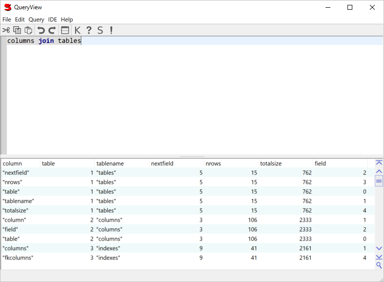

QueryView
You can access the database interactively via QueryView, available from the
IDE menu. QueryView has two panes, a top editor pane where you
type in database requests, and a bottom ListView pane that displays the
results of queries. Like the WorkSpace, F9/Run executes the current selection,
or if there is no selection, the entire contents of the top request pane.

Query Menu
Also available from the toolbar.
- Run (F9)
- Run the selected text, or everything on the input pane if there is no selection.
The result will be displayed in the lower list view pane.
- Strategy (Shift+F9)
- Displays an alert showing the "strategy" that will be used to execute the query
i.e. the result of optimizing the query.
- Keys
- Display the keys for the selected query.
- Schema (Ctrl+S)
- Display the schema for a selected table, or the columns for a selected query.